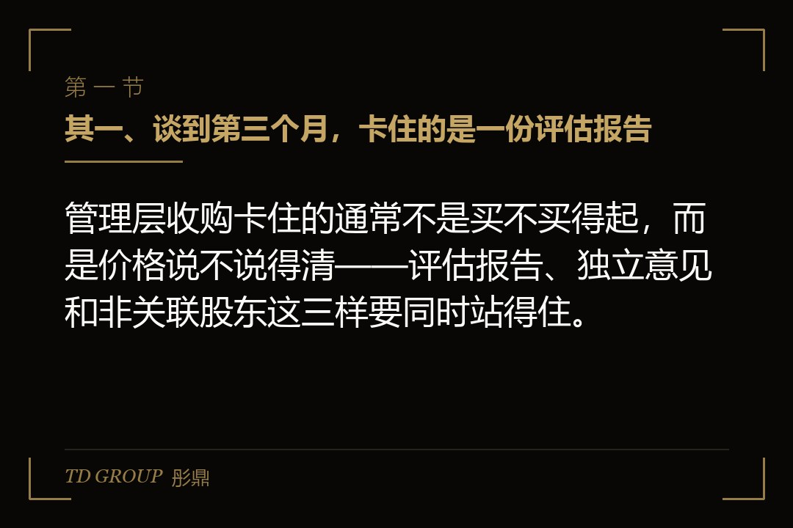
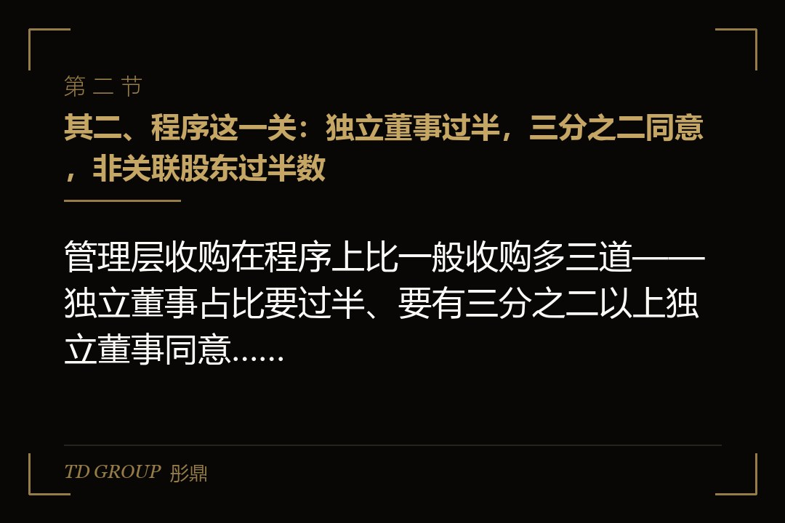
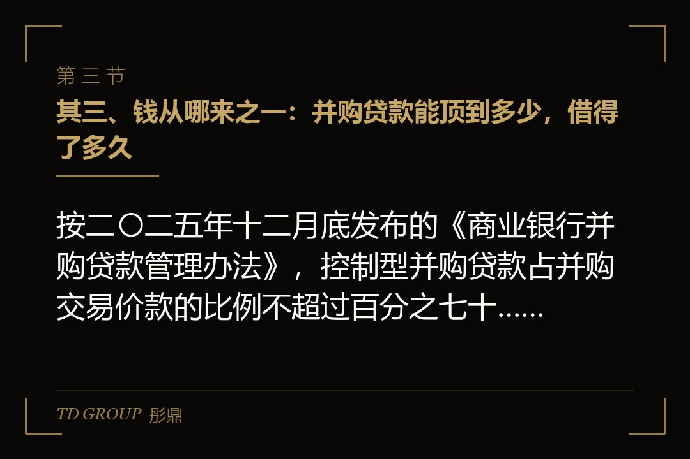

其一、谈到第三个月，卡住的是一份评估报告

结论先行：管理层收购卡住的通常不是买不买得起，而是价格说不说得清——评估报告、独立意见和非关联股东这三样要同时站得住。
假设有家在沪市主板上市的精密模具公司，创始人年过七十，两个子女都不在公司做事，而总经理带着五位副总在这家公司干了十几年。创始人一家持股百分之三十八，想退出，头一个想到的买家就是这支管理团队。
双方先谈价格，按当时的市场价格谈了一个区间，谈得挺顺。到第三个月，事情停在一份评估报告上：评估机构出的结果比双方谈的数低了一截，而管理层这边要向银行借钱，银行认的是评估值，不是他们私下谈的数。
卡住的还不只是数字。独立董事要发表意见，独立财务顾问要出专业意见，两份都要公告；而管理团队里有四个人本身是董事或者高级管理人员，他们在董事会和股东会上都要回避。谁来替这笔交易说话，成了比价格更早要解决的问题。
这一篇就按这个顺序拆：程序上要过几道、钱可以从哪几处来、价怎么定才经得起问、关联交易与回避怎么安排，以及常见的几种卡死分别长什么样。
其二、程序这一关：独立董事过半，三分之二同意，非关联股东过半数

结论先行：管理层收购在程序上比一般收购多三道——独立董事占比要过半、要有三分之二以上独立董事同意、还要经出席股东会的非关联股东过半数通过。
《上市公司收购管理办法》第五十一条把门槛写得很具体。拟收购本公司的主体如果是公司的董事、监事、高级管理人员、员工，或者他们所控制或者委托的法人和其他组织，这家上市公司首先要具备健全且运行良好的组织机构以及有效的内部控制制度。
接着是人的结构：公司董事会成员中独立董事的比例应当达到或者超过二分之一。多数上市公司平时的独董占比在三分之一这一档，所以这一条常常意味着要先补选独立董事，而补选本身要开一次股东会，时间表往后推一两个月是常事。
然后是三道表决。本次收购要经董事会非关联董事作出决议；要取得三分之二以上独立董事同意；再提交公司股东会审议，经出席股东会的非关联股东所持表决权过半数通过。三道各管一层，缺一道都不能往下走。
还有两份意见要出。公司应当聘请具有相应资格的资产评估机构提供公司资产评估报告；独立董事在发表意见之前，应当聘请独立财务顾问就本次收购出具专业意见，独立董事的意见和独立财务顾问的意见要一并予以公告。
第五十一条还有一道人的门槛：上市公司的董事、监事、高级管理人员存在《公司法》规定的不得担任相应职务的情形，或者最近三年有证券市场不良诚信记录的，不得收购本公司。这一条是先查人，再谈事。
其三、钱从哪来之一：并购贷款能顶到多少，借得了多久

结论先行：按二〇二五年十二月底发布的《商业银行并购贷款管理办法》，控制型并购贷款占并购交易价款的比例不超过百分之七十，期限原则上不超过十年。
管理层收购天然是一笔带杠杆的交易：买的人是拿工资的，标的是一家上市公司的控制权，中间那一大截只能靠借。所以这笔交易做不做得成，很大程度上取决于银行这一侧的口径。
口径在二〇二五年底换过一版。国家金融监督管理总局印发《商业银行并购贷款管理办法》，替代了此前施行十年的并购贷款风险管理指引。控制型并购贷款，也就是以取得目标企业或者资产控制权为目的的那一类，占并购交易价款的比例上限从百分之六十提到百分之七十，权益性资金相应不低于百分之三十；期限从七年延长到原则上不超过十年。
同时新设了参股型并购贷款：不取得控制权、只取得一定股权比例的，贷款占并购交易价款的比例不高于百分之六十，权益性资金不低于百分之四十，期限原则上不超过七年。参股型对单次取得的股权比例设了下限，已经持有较高比例的，后续单次增持也有各自的下限要求。
对那家模具公司的管理团队，这套数字直接翻译成一句话：假如交易价款是六亿元，控制型并购贷款最多顶到四亿二千万元，剩下一亿八千万元要拿真金白银的权益性资金出来。这一亿八千万元从哪里来，才是整笔交易的真问题。
还有一条经常被忽略：办法要求借款人与目标企业之间具有较高的产业相关度或者战略协同性。管理层收购在这一点上通常不难说清，因为买的就是自己干了十几年的公司；难的是主体——收购主体如果是一家新设的持股平台，银行看的是这家平台背后的人和还款来源。
其四、钱从哪来之二：持股平台、外部产业方和卖方账期
结论先行：权益性资金那一块通常拆成三份——管理层自己的钱、引进来的产业方或者基金的钱，以及卖方愿意让出的账期。
管理层自己能拿出来的，往往是这笔交易里最小的一块。常见做法是设一家有限合伙持股平台，管理团队作为普通合伙人或者出资的有限合伙人进去，既解决出资，也解决日后团队内部的进退安排。
平台结构要在动手之前想清楚两件事：谁是执行事务合伙人，因为它决定表决权在谁手上；以及有人离职时他那部分权益按什么价、什么程序退出。这两件写不清楚，三年之后一定会回来找麻烦。
另一块是外部资金。产业方、并购基金、地方的产业引导基金都可能进来，但它们进来是要有出口的。常见安排是约定一个回购或者转让的时点与条件，而这些条件会不会被认定为管理层的隐性负债，是尽调里必问的一项。
还有一块是卖方的账期。创始人一家要的是退出，不一定要求一次付清。把总价拆成签约付一部分、过户付一部分、后面两三年再付一部分，能把当期的资金压力削下去。代价是卖方要接受一段时间的信用风险，通常用股份质押或者担保去换。
这三块加起来，才是并购贷款之外那百分之三十权益性资金的来源。把顺序搞反是常见的错：先去谈贷款，再回头凑权益，结果银行的审批一直挂着，而卖方以为这边没诚意。
其五、价怎么定才经得起问
结论先行：管理层收购的价格要同时对三样负责——评估报告的结论、可比交易的区间，以及非关联股东愿不愿意投出这一票。
第五十一条明确要求公司聘请具有相应资格的资产评估机构提供公司资产评估报告。这份报告的作用不是替双方定价，是给定价提供一个能被检验的参照：价格明显低于评估结论的，问询会直接问为什么。
评估通常会给出几种方法的结果。资产基础法看的是这家公司现在有什么，收益法看的是它将来能挣多少，市场法看的是同类交易在什么区间成交。三种方法的结论差得远的时候，要说清楚为什么选了其中一种。
管理层这一方有一个天然的嫌疑：他们比谁都清楚这家公司的真实情况。所以问询最常问的方向是，交易前公司有没有反常地少确认收入、多计提减值、推迟订单，把业绩压到一个对买方有利的位置上。这类问题靠解释解释不清，只能靠时间——把收购的启动时点与业绩的低点拉开。
如果卖方是国有股东，还要多一道。国有股权转让有自己的评估备案与进场交易要求，转让价格不得低于经备案的评估结果，通常还要公开挂牌。管理层能不能作为受让方、以什么条件参与，要按国有资产监督管理的规定另行判断。
价格的最后一道关是非关联股东。他们手上没有公司内部的信息，判断依据就是公告里那几份文件：评估报告、独立财务顾问意见、独立董事意见。写得含糊，这一票就投不出来。
其六、关联交易与回避表决：谁不能投，谁要说话
结论先行：管理层收购里，管理层一方在董事会和股东会上都要回避表决，真正替这笔交易说话的是非关联董事、独立董事和独立财务顾问。
回避不是走形式。董事会这一层，由非关联董事作出决议，意味着身在管理团队里的董事不参与表决，也不计入表决基数。股东会这一层，管理层及其一致行动人所持的表决权要排除在外，只数非关联股东的票。
这里有一道常被低估的算术：非关联股东过半数，数的是出席会议的非关联股东所持表决权。中小股东出席率低的时候，少数几家机构的态度就能决定结果。所以方案公告之前把沟通做在前面，比公告之后再去解释有用得多。
独立财务顾问的角色也要摆正。它出的是专业意见，不是背书，它要回答的是这笔交易定价是否公允、程序是否合规、对上市公司和非关联股东有没有损害。它给不出肯定结论的时候，独立董事那三分之二就很难凑齐。
还有信息保密这一条。从管理层动念到公告，中间有一段时间知情的人只有几个，这段时间公司的信息管理要按规定做登记，参与人员在公告之前不得买卖本公司股票。这一条出问题，整笔交易会连人一起被拖住。
最后是承诺。管理层作为收购人要作出的承诺通常包括：收购完成后一段时间内不转让所持股份、维持上市公司的独立性、避免同业竞争、规范关联交易。按《收购管理办法》，收购人持有的被收购公司股份在收购完成后十八个月内不得转让。
其七、几种卡死，和动手之前要先摆出来的几样
结论先行：管理层收购卡死的地方通常有四处——独立董事不够、资金结构说不圆、价格与评估差得远、以及团队内部没谈拢。
其中最容易被低估的是团队内部。六个人一起买，各出多少、各占多少、谁说了算、谁走了怎么退，这几件在签字之前没写清楚，后面两年会变成公司治理层面的问题，而那时候已经没有回头路。
其次是资金结构。贷款那一部分有比例上限也有期限，而还款靠的是收购主体自己的现金流。如果还款来源实质上要依赖上市公司分红，那就要面对一个问题：分红决策权在上市公司的股东会，不在收购主体手里，这层关系在问询里一定会被问到。
再来是时间。补选独立董事要开股东会，评估与审计要做，贷款审批要走，卖方那边还有自己的安排。把这些串起来，从动念到过户很少短于半年，而管理团队在这半年里还要把公司的经营数字做正常——做得太好不行，做得太差更不行。
还有一处是身份的切换。收购完成之后，这些人既是公司的经营者，也是控股股东，关联交易、资金占用、对外担保这些事项从此都要按控股股东的标准去披露。不少团队是过户之后才头一次认真读上市规则的那几章。
动手之前，把这几样先摆到桌面上：现在的独立董事占比和补选安排；一份初步的评估口径与可比交易区间；权益性资金三块各出多少、由谁出；持股平台的进退规则；卖方能接受的付款节奏；以及一张把上面这些串成日期的时间表。
本质上，管理层收购是在回答一个问题：一群最懂这家公司的人去买这家公司，怎么让不懂的人相信价格是公道的。程序、评估、独立意见那一整套，都是为回答这个问题而设的。